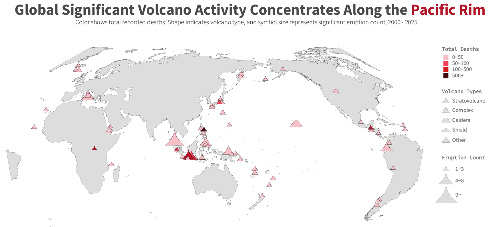
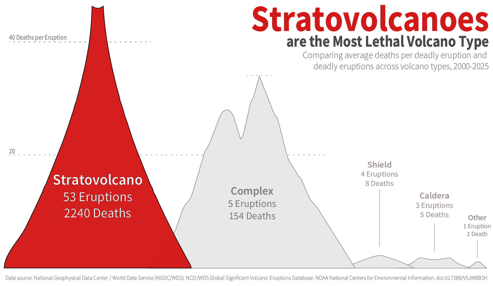
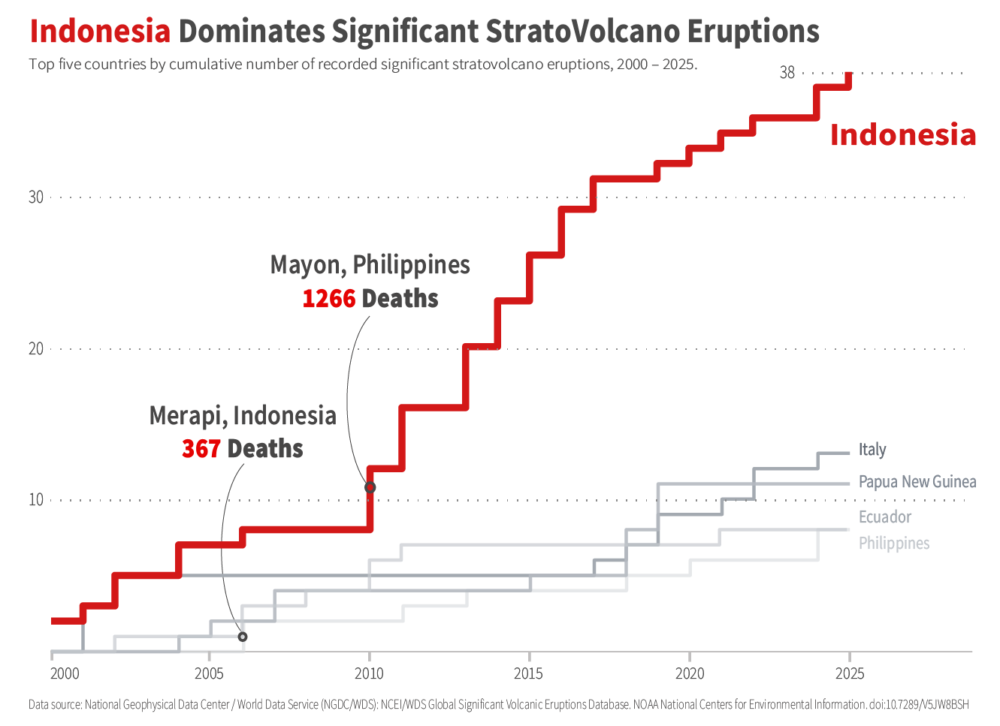

Stratovolcano Risk in the 21st Century
A global analysis of volcano distribution, volcano types, and country-level concentration of significant eruptions, 2000–2025
By Yichen Li
Final Project, 2026

Significant volcanic eruptions are not evenly distributed across the world. Instead, they are concentrated along tectonic plate boundaries, with the strongest clustering around the Pacific Ring of Fire. This pattern shows that volcanic risk follows geographic structure rather than occurring randomly. At the global scale, the Pacific region stands out as the main center of significant volcanic activity, making it a useful starting point for understanding where dangerous eruptions are most likely to occur.
This project focuses specifically on significant eruptions. In this dataset, a significant eruption is defined as one that meets at least one of the following criteria: causing deaths, causing notable damage, reaching a Volcanic Explosivity Index (VEI) of 6 or higher, triggering a tsunami, or being associated with a major earthquake.
The analysis moves from a broad global view to a more specific argument by grouping volcanoes into five types: stratovolcano, complex volcano, caldera, shield volcano, and other. The project begins with the worldwide distribution of significant eruptions, then focuses on stratovolcanoes as the most consequential type in the dataset because they combine frequent eruptions with strong human impact. Finally, it examines the countries where significant stratovolcano eruptions are most concentrated. Together, these three views move from global patterns to volcano type importance and then to country-level concentration.

Among the five volcano types in this dataset, stratovolcanoes stand out most clearly. They account for the largest number of significant eruptions and also have the highest average deaths per eruption. This combination of frequent activity and high lethality makes them more consequential than the other volcano types considered here. In this dataset, stratovolcanoes are not the most common type but also the most destructive in terms of human impact.

The risks associated with stratovolcanoes are also unevenly distributed across countries. Between 2000 and 2025, Indonesia recorded the highest cumulative number of significant stratovolcano eruptions among these five countries. This suggests that the threat of stratovolcano activity is concentrated in specific national contexts rather than shared equally across all volcanic regions. The plot also highlight the two deadliest eruptions of the 21st century: Mayon in the Philippines (1266 deaths), followed by Merapi in Indonesia (367 deaths).
Conclusion
Rather than being evenly shared across the globe, significant volcanic risk is concentrated in specific places and linked to particular types of volcanoes. The results show that a relatively small number of regions and volcano types are responsible for a large share of the most dangerous eruptions. This helps explain why some countries experience repeated volcanic disasters while others face much lower risk. More broadly, the findings suggest that understanding volcanic hazards requires focusing on patterns of impact, not just the presence of volcanoes. By identifying where destructive eruptions happen most often and which volcano types cause the greatest harm, this project highlights how data can help clarify where volcanic risk matters most today.